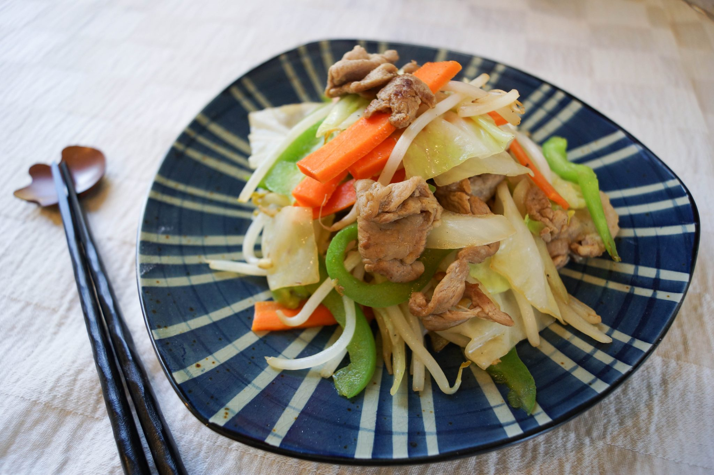

Home

Yasai Itame (Tumis sayur jepang)
Bahan
- 1/2 Kol (Iris kasar)
- 1 Wortel tipis
- 1/2 Paprika
- 100 gr Tauge
- 1 sdm minyak wijen
- 2 Siung bawang putih (cincang)
- Saus : 2 sdm kecap asin, 1 sdm mirin (ganti air gula + 1 sdt air), 1 sdt kaldu jamur.
Cara
- Tumis bawang putih dengan minyak wijen hingga harum.
- Masukkan wortel, kol, dan paprika. Aduk hingga layu.
- Tambahkan tauge dan saus, aduk cepat 2 menit.
- Sajikan dengan taburan biji wijen sangrai.
Variasi
- Tambahkan tofu atau jamur